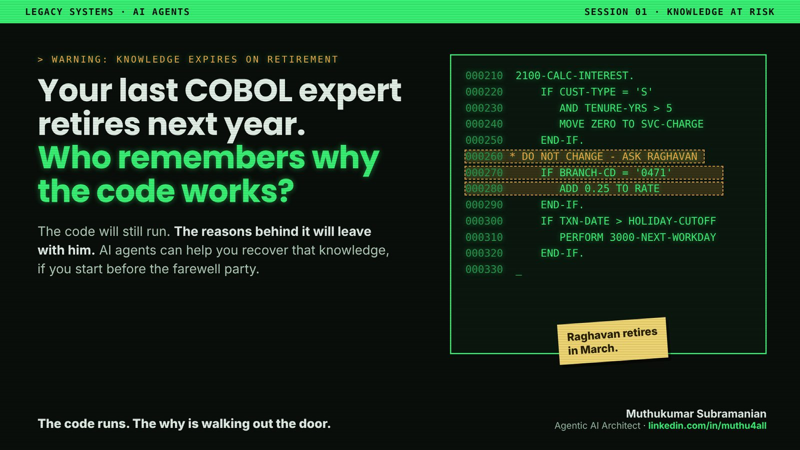
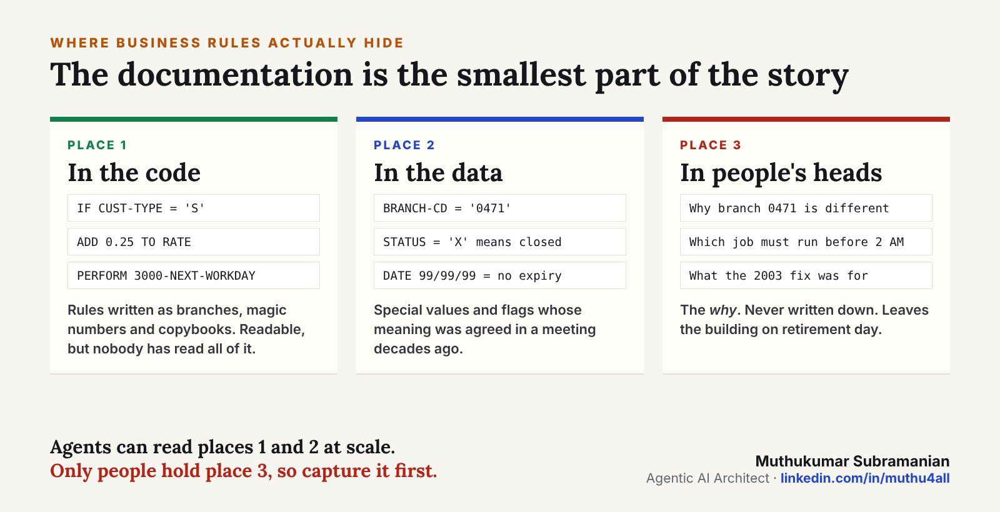
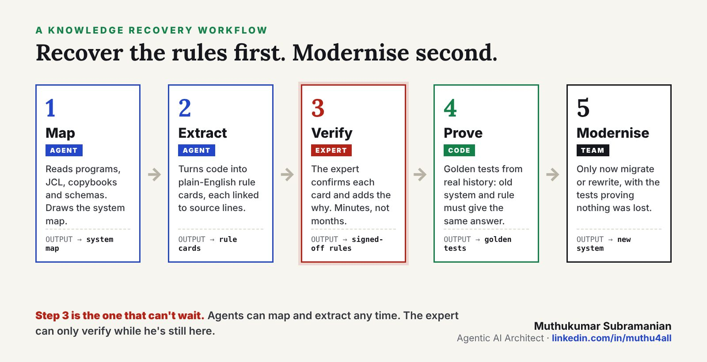
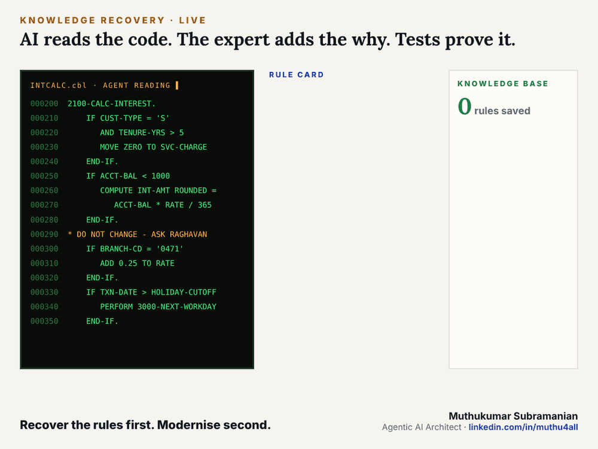

Your Last COBOL Expert Retires Next Year. Who Remembers Why the Code Works?
By Muthukumar Subramanian · Agentic AI Architect

Every bank, insurer and large government system I've worked with has one.
Let's call him Raghavan.
He's been there for 30 years. He knows why the interest calculation has a special case for one branch. He knows which batch job must finish before 2 AM, or the next morning's reports go wrong. He knows what the "temporary" fix from 2003 was actually for.
None of this is written down. It's in the code, sort of, and in his head, definitely.
And Raghavan retires in March.
I've been in IT for 25 years, at Infosys and then as a consultant and fractional executive, across everything from legacy systems to agentic AI. I've seen this story play out more than once, and it rarely ends well.
The problem isn't the code. It's the missing "why".
People talk about legacy systems as if the problem is old technology. COBOL, mainframes, green screens.
It isn't. That code has been running reliably for decades. It still works.
The real problem is that nobody remembers why it does what it does.
Take a line like this:
IF BRANCH-CD = '0471' ADD 0.25 TO RATE.
Any decent developer can read it. Branch 0471 gets a quarter percent more interest.
But why? Is it a regulatory requirement? A deal from a merger? A bug someone never fixed? Can you remove it during modernisation, or will 4,000 customers get a letter saying their interest has changed?
The code tells you what. Only people know why.

Why most modernisation projects hurt
I've seen two common approaches. Both have the same blind spot.
Approach 1: Convert it line by line. Translate COBOL into Java, rule for rule. Fast and safe on paper. But you carry every mystery across into a new language, and now nobody understands the Java either.
Approach 2: Rewrite from fresh requirements. Sit with the business, document what the system should do, and build it new. Cleaner, but the business users don't know about the hidden rules either. The special branch, the holiday cutoff and the senior-customer waiver get missed. You find out in production, usually through a customer complaint.
Either way, the knowledge gap stays. It just moves.
Where AI agents genuinely help
This is one area where I think AI agents are not hype. They're actually well suited to the job.
Reading hundreds of thousands of lines of old code, tracing which program calls which, following a field through copybooks and database tables, and writing it all up in plain English is slow, tedious work for people. For an agent it's reading, and reading is what LLMs do well.
But the agent doesn't replace Raghavan. It makes the most of the time he has left.
Here's the workflow I'd use.
1. Map. Agents read the programs, JCL, copybooks and database schemas, and build a map of the system: what calls what, which data flows where, which jobs depend on which.
2. Extract. Agents turn the code into plain-English rule cards. "Senior customers with more than 5 years' tenure pay no service charge." Each card links back to the exact lines of code it came from.
3. Verify. This is where Raghavan comes in. Instead of spending months writing documentation from scratch, he reviews rule cards: yes, correct, no, that's wrong, and here's why it exists. Ten minutes a card instead of ten days a module. The agent can even ask him targeted questions about the code it couldn't explain: "Lines 290–320 treat branch 0471 differently. What's the reason?"
4. Prove. Every confirmed rule gets a golden test built from real historical data. The old system and the new rule must give the same answer. If they don't, either the card is wrong or the code has a surprise in it. Both are worth knowing.
5. Modernise. Only now do you migrate or rewrite, with a verified rulebook and a test suite that proves nothing was lost.

Watch it work
Here's what that looks like on a small piece of an interest calculation program. The agent reads the code and pulls out a rule. The expert confirms it and adds the reason, a golden test proves the old system agrees, and the rule goes into the knowledge base.

The bit people get wrong
Please don't read this as "AI will convert your COBOL to Java overnight". That's not what I'm saying, and it's how projects get into trouble.
AI agents can misread code. They can explain a branch confidently and wrongly. That's exactly why every rule card is linked to its source lines, checked by a human, and proven by a test. The agent does the heavy reading. The expert does the judging. The tests settle the arguments.
Without step 3 and step 4, you're just generating very convincing documentation, which is arguably worse than none.
Why this can't wait
Steps 1, 2, 4 and 5 can happen any time. Step 3 can only happen while Raghavan is still here.
Knowledge has an expiry date. It's the day of the farewell party.
If your organisation has a major modernisation planned for 2028, the knowledge recovery shouldn't start in 2028. It should start now, while the people who know the why are still a phone call away, and still willing to pick up.
A word for the Raghavans
One more thing. The engineers who built and kept these systems running for 30 years are often treated as the "legacy" problem.
They're not. They're the most valuable source of truth the organisation has.
A good knowledge recovery project is also a way of saying thank you. It turns what they know into something that outlives their time at the company, with their name on it.
Curious how others are handling this:
Does your organisation have a Raghavan? And what's the plan for the day after he retires?